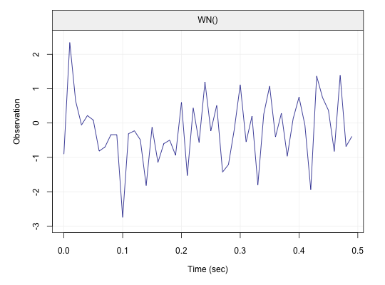
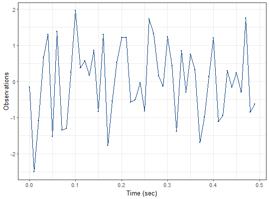

Setups a time series oriented object that works well with graphing and summary utilities
gts(data, start = 0, end = NULL, freq = 1, unit = NULL, name = NULL)
| data | A one-column |
|---|---|
| start | A |
| end | A |
| freq | A |
| unit | A |
| name | A |
A gts object with the following attributes:
The time of the first observation
The time of the last observation
Numeric representation of frequency
String representation of the unit
Name of the dataset
m = data.frame(rnorm(50)) x = gts(m, unit = 'sec', name = 'example') x#> example #> [1,] -0.15666689 #> [2,] -2.50383734 #> [3,] -1.08495472 #> [4,] 0.66982062 #> [5,] 1.30495036 #> [6,] -1.52951121 #> [7,] 1.37485234 #> [8,] -1.34116149 #> [9,] -1.30285133 #> [10,] 0.25788892 #> [11,] 1.95694576 #> [12,] 0.37584286 #> [13,] 0.56703756 #> [14,] 0.16758051 #> [15,] 0.85202743 #> [16,] -0.83005772 #> [17,] 1.30135255 #> [18,] -1.77081733 #> [19,] -0.54265504 #> [20,] 0.53319464 #> [21,] 1.21898511 #> [22,] 1.22245286 #> [23,] -0.57962141 #> [24,] -0.49987212 #> [25,] -0.04230386 #> [26,] -0.82171168 #> [27,] 1.73203863 #> [28,] 1.33128021 #> [29,] 0.15595874 #> [30,] -0.12739316 #> [31,] 1.23448550 #> [32,] 0.42790975 #> [33,] -1.38146293 #> [34,] 0.84573902 #> [35,] -0.29375511 #> [36,] 0.74714070 #> [37,] 0.32656288 #> [38,] -1.69302376 #> [39,] -0.98411635 #> [40,] 0.12303130 #> [41,] 1.20040238 #> [42,] -1.10558210 #> [43,] -0.94883340 #> [44,] 0.29181556 #> [45,] -0.15802769 #> [46,] 0.23337971 #> [47,] -0.29738957 #> [48,] 1.74988013 #> [49,] -0.84866143 #> [50,] -0.63529470 #> attr(,"start") #> [1] 0 #> attr(,"end") #> [1] 49 #> attr(,"freq") #> [1] 1 #> attr(,"unit") #> [1] "sec" #> attr(,"name") #> [1] "example" #> attr(,"class") #> [1] "gts" "matrix"plot(x)#> Error in gen_gts(50, WN(sigma2 = 1)): could not find function "is.ts.model"x = gts(x, freq = 100, unit = 'sec') plot(x)